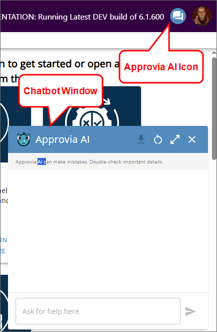
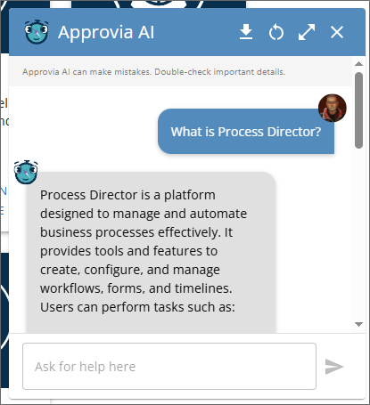

If you are using Process Director v6.0.300 or below, you can view the user interface documentation for your version of the product on the User Interface (Legacy) topic.
If you are using Process Director v6.0.300 or below, you can view the user interface documentation for your version of the product on the User Interface (Legacy) topic.
If you are using Process Director v6.0.300 or below, you can view the user interface documentation for your version of the product on the User Interface (Legacy) topic.
 This topic discusses a feature that is under active development, and is subject to change without notice.
This topic discusses a feature that is under active development, and is subject to change without notice.
For Process Director v6.1.500 and higher, users of selected Cloud installations may be configured to use Approvia AI via the Approvia AI Variables page of the IT Admin area. Approvia AI is the name BP Logix has given to an online help system that uses Microsoft's Azure AI Foundry to provide an online help system within the product, based on the published product documentation. Approvia AI can provide detailed information about Process Director, as well as any custom applications that have been created on your system.
Approvia AI is a separately licensed component, and administrators will need to work with BP Logix to enable and configure Approvia AI for use. Approvia AI can be trained on both Process Director's documentation, as well as on any documentation you may have for complex applications that you create on your installation. Please speak with your BP Logix Account Manager if you have any questions about Approvia AI licensing or costs.
From the user's perspective, Approvia AI will appear as an additional icon placed to the left of the User Profile icon. When clicked, this icon will open a chatbot window for the Approvia AI agent.

Using the chatbot window users can ask questions about the product, which will appear as text responses in the chatbot window.

In the upper right corner of the Approvia AI chat box, there are four icons that enable you to access additional features.
| Icon | Description |
|---|---|
| Export Chat History: Clicking this icon will download your chat history to you local computer as a JSON data file. | |
| Start a new chat: Clicking this icon will clear the current contents of the chat box window to start a new conversation. | |
| | | Expand window: Clicking the icon will expand the chat box window to a larger size. This icon will change to a Collapse Window icon to return the window to the default size. |
| Close Approvia AI: Clicking this icon will close the chat box window. |
Approvia AI installations will also have an additional Form control available to use Approvia AI on an individual form. Please See the Approvia AI Control topic for more information.
For information about how different users see the interface, and how different UI elements are displayed or accessed, please see the Access Levels topic. You can also navigate back to the main Navigator 2 UI topic.
Please refer to the Common UI Elements topic to learn about other common user interface conventions.